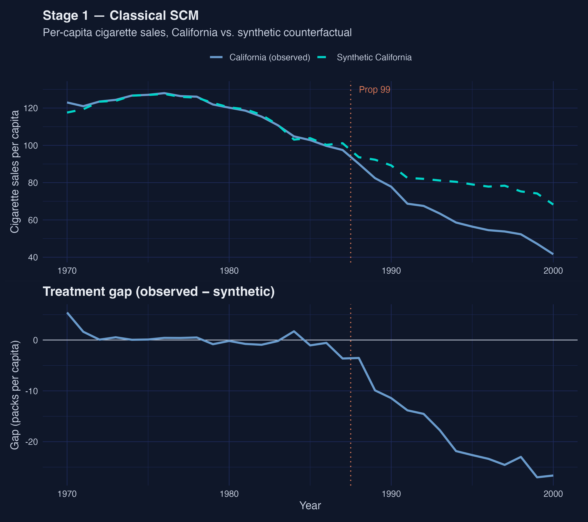
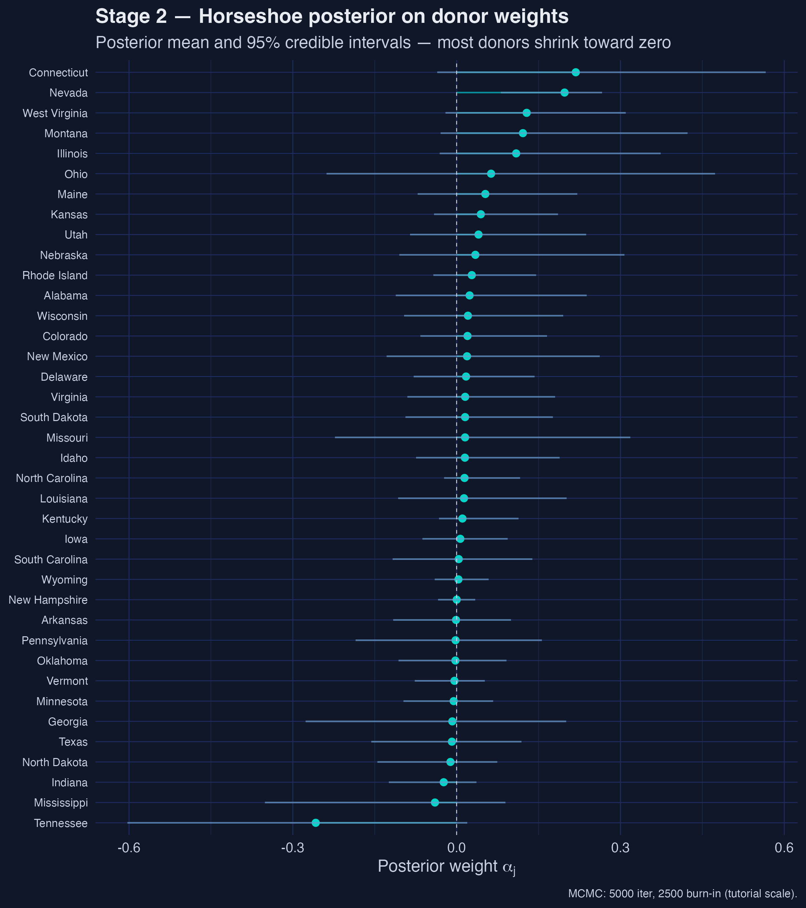
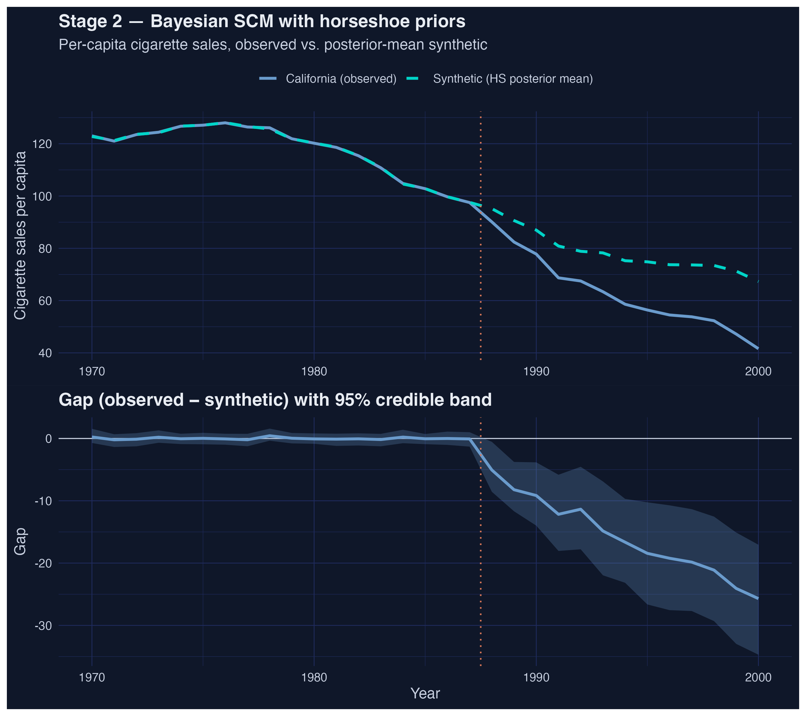
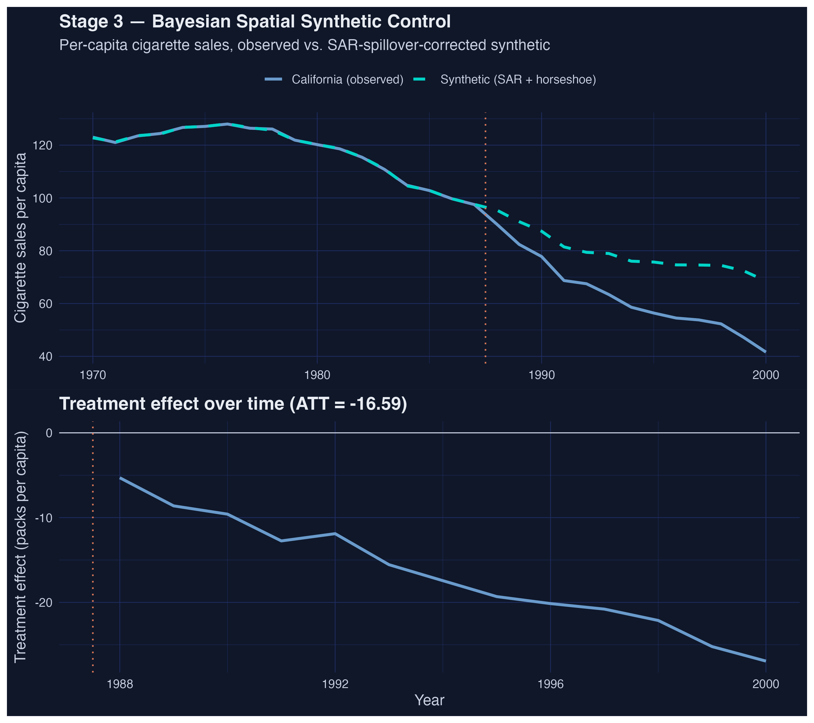
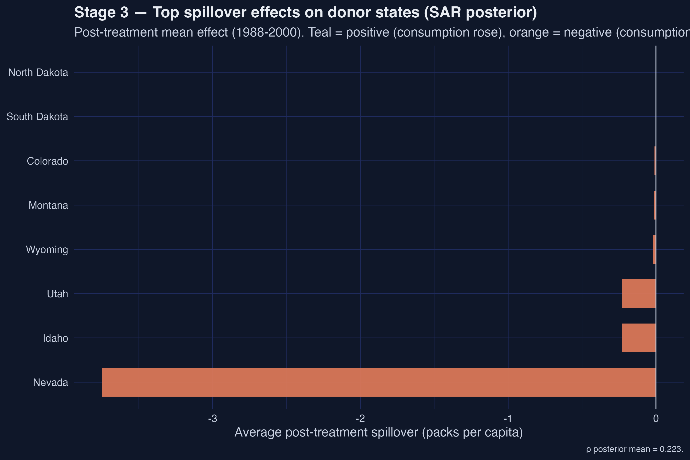
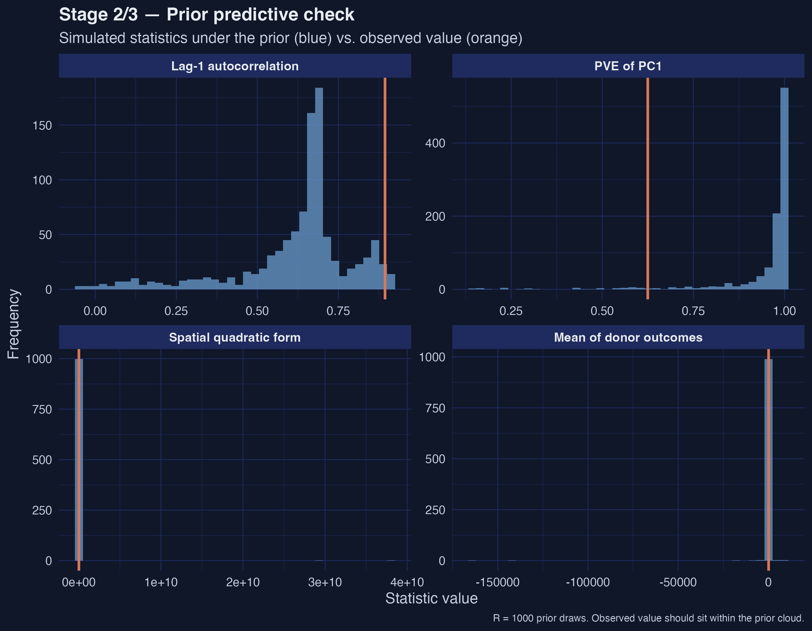

California’s Proposition 99, three estimators, and a Nevada-sized spillover
Nagoya University (GSID)
June 11, 2026
Act I
Prop 99 raised California’s cigarette tax 25 cents in 1988. The classic answer — a 25–30 pack drop — has been quoted for 20 years.
But it rests on two quiet assumptions: donor weights live on a sparse simplex, and donor states are unaffected by California’s policy. What if both are wrong?

ATT stays −18 to −16 packs/capita across all three estimators; active donors climb 4 → 23 → 27.
Act II
\[\mathrm{ATT} = E\big[Y_i(1) - Y_i(0) \mid D_i = 1\big]\]
With a single treated unit, the ATT is the gap between observed California and a counterfactual California, averaged over 1988–2000.
Every stage targets the same ATT — only the way it builds the counterfactual California changes.
cigsale)Spatial structure ships with the data: a 38×38 binary contiguity matrix \(W\) among donors, row-normalized before it enters the SAR likelihood.
tidysynthEach arrow weakens an assumption: Stage 1 imposes simplex + SUTVA; Stage 2 relaxes the simplex; Stage 3 also relaxes SUTVA.
\[\widehat\alpha = \arg\min_\alpha \big\| Y_{1,\text{pre}} - Y_{c,\text{pre}}\,\alpha \big\|^2 \quad \text{s.t.}\quad \alpha_j \ge 0,\ \sum_j \alpha_j = 1\]
The non-negativity-plus-sum-to-one constraint is an implicit regularizer — it pushes most weights to exactly zero.
| Donor | Weight |
|---|---|
| Utah | 0.327 |
| Nevada | 0.255 |
| Montana | 0.245 |
| Connecticut | 0.148 |
The other 34 donors are essentially zero — a near-pure four-state synthetic California.
−18.46
ATT, classical SCM (95% bootstrap CI [−22.21, −14.45]) · smaller than Abadie’s −27 because the shipped predictors are leaner
\[\alpha_j \mid \tau, \lambda_j \sim \mathcal{N}\big(0,\ \tau^2 \lambda_j^2\big), \quad \lambda_j \sim \mathcal{C}^+(0,1), \quad \tau \sim \mathcal{C}^+(0,1)\]
A global scale \(\tau\) pulls everything toward zero; a local scale \(\lambda_j\) lets individual donors break free. The half-Cauchy tails do the rest.
Now the data, not the constraint, decide which donors get non-zero mass.

Posterior mean donor weights under the horseshoe, with 95% credible intervals — most hug zero, but only Nevada’s interval clears zero.

California vs horseshoe-posterior-mean synthetic (top) and the gap with a 95% credible band (bottom) — the band widens post-1988 but stays below zero.
\[Y_{c,t} = \rho\, W\, Y_{c,t} + X_{c,t}\beta + Y_c^{\text{lag}}\alpha + \varepsilon_t\]
The spatial lag \(W Y_{c,t}\) is the row-normalized neighbour average; \(\rho\) measures how strongly a state co-moves with its neighbours. When \(\rho = 0\) we recover Stage 2.
If \(\rho > 0\), a donor’s sales are partly its neighbours’ — so Nevada’s post-1988 sales are part of the treatment effect, not the counterfactual.
w <- as.matrix(california_smoking$w[, 2]) # CA's contiguity row
W <- as.matrix(california_smoking$W[, -1]) # 38x38 donor contiguity
rownames(W) <- colnames(W) <- california_smoking$W$state
fit_sar <- sc_spillover(
data = panel_df, treated_unit = "California",
w = w, W = W, y = "cigsale", X = c("retprice"),
M = MCMC_ITER, burn = MCMC_BURN, seed = SEED) # horseshoe + SAR
rho_hat <- fit_sar$rho_hat # spatial autocorrelation
att_sar <- fit_sar$effects$ate_point # the ATT (estimand)
att_sar_ci <- fit_sar$effects$ate_ci95 # posterior credible interval0.223
posterior mean \(\hat\rho\) (95% CrI [0.168, 0.272]) · moderate, stable, and bounded away from zero

California observed vs SAR-corrected synthetic (top) and the treatment-effect path over time (bottom) — the effect on California deepens roughly linearly after 1988.

Top-8 donor states by absolute post-1988 spillover — Nevada’s −3.75 dwarfs every other state.

Prior predictive check on four summary statistics — all four observed orange lines land inside the simulated prior cloud, not in its tails.
Act III
| Stage | ATT | 95% Interval | Active donors |
|---|---|---|---|
| Classical SCM | −18.46 | [−22.21, −14.45] | 4 |
| Bayesian HS | −15.84 | [−21.76, −9.48] | 23 |
| Bayesian Spatial SAR | −16.59 | [−16.78, −16.39] | 27 |
The headline ATT is robust; the donor pool’s shape is not — and the Stage-3 interval is artificially narrow (ESS(ρ) = 3 at tutorial scale).
Objection. A spatial model and machine-selected controls can’t manufacture identification.
Response. Correct. The ATT is identified only under conditional independence given \(X\) and parallel trends. The horseshoe just selects controls flexibly; the SAR layer just tests SUTVA — and rejects it. We evaluate a method, not a naive causal claim.
−3.75
Nevada’s post-treatment spillover (packs/capita) · 16× the next donor · direct evidence SUTVA is violated